Walk the plan before anyone leaves the habitat
The 3D map puts the plan of the 2D planner on the real relief of the boxwork, lights it with the Sun of Mars, and lets you walk it at eye height with the arm tablet's meters. Each orange number points at a control; the same number in the list below the picture says what it does. Hover a list item to light up its control.
How to open it, and what it shows
The 3D map shows the same 2 × 2 km box of the Gale boxwork as the 2D planner: the 1 m terrain model with the HiRISE photo (25 cm) on top. It reads the plan you made in the 2D planner; it never makes one unless you ask. Everything is local: the page needs no internet.
python src/viz3d/build_terrain_assets.py # once: the 3D terrain (a few seconds) python -m uvicorn api.main:app --port 8000 # then open http://localhost:8000/3d/
From the 2D planner, the 3D link in step 4 (Walk) opens it with the same plan. Plan first in the 2D planner; with no plan saved the terrain still works and the panel offers Plan with default settings.
The screen
The terrain fills the screen. The panel on the left holds the plan and the settings in folding sections; only Plan is open at the start. The colour of the route tells the way: cyan going out, pink coming back.
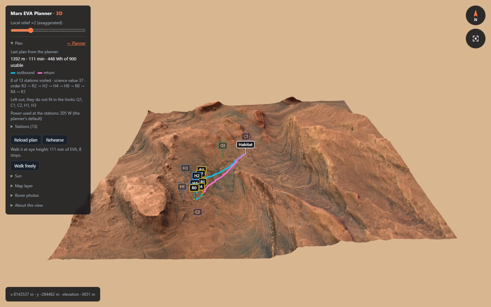
- 1Panel
Sections: Plan, Sun, Map layer, Rover photos, About this view. Click a title to open or fold it.
- 2Local relief
×1 is the real terrain model; ×1.5 to ×5 exaggerate only the local relief, so knolls and scarps stand out. Default ×2. Rehearsing and walking lock it at ×1.
- 3Plan
The plan from the planner: length, time, energy, visiting order and what was left out.
- 4← Planner
Back to the 2D planner, to change the plan.
- 5Compass
The needle points north. Click it to face north.
- 6Frame
Back to the opening view of the whole box.
- 7Habitat and stations
Pins on the ground. Stations the plan does not visit are dimmed. Click a pin for its card.
- 8Readout
Position and elevation of the point under the cursor, in metres of the Mars map projection.
Moving around
The camera turns around the point under the cursor, so what you point at stays in place.
| Mouse | Touch | |
|---|---|---|
| Rotate around the point under the cursor | drag | one finger |
| Move | right-drag or Shift + drag | two fingers |
| Zoom towards the point under the cursor | wheel | pinch (twist turns) |
| Face north · back to the start | Compass · Frame (top right) | |
Map-style mouse (drag moves, right-drag rotates): add ?drag=pan to the address.
What the plan says, station by station
The Plan section repeats the planner's result in plain words, and gives the three ways to see it: from above, rehearsed at eye height, or walked freely.
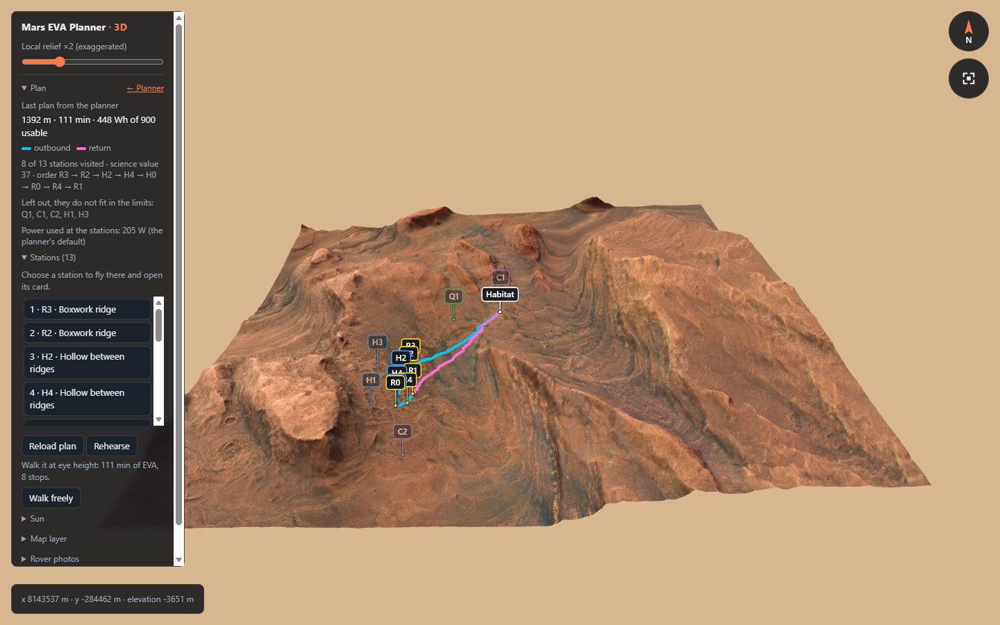
- 1Where it comes from
"Last plan from the planner".
- 2Length, time, energy
"1392 m · 111 min · 448 Wh of 900 usable".
- 3Colours of the route
Cyan outbound, pink return.
- 4The plan's messages
Stations visited and science value, the order (R3 → R2 → …), the stations left out, the power used at the stations. ⚠ in amber only for what needs a look, such as a habitat the planner moved.
- 5Stations (13)
Folded list of every station, in visiting order, then the ones not visited.
- 6A station in the list
"1 · R3 · Boxwork ridge": flies there and opens its card. Works with the keyboard.
- 7Reload plan
Reads the planner's last plan again, after you plan in the 2D tab.
- 8Rehearse
Walks the plan at eye height with its clock and the tablet's meters. See below.
- 9Walk freely
Walk anywhere in the box, like a game. Works without a plan. See below.
A station's card
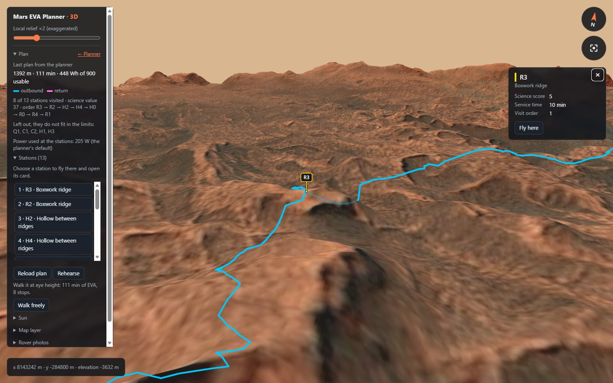
- 1Choose a station
In the list, or click its pin on the terrain.
- 2The card
Type, science score, service time and visit order (for R3: Boxwork ridge, 5, 10 min, 1). With the photo catalogue, also the nearest rover photo within 150 m.
- 3Fly here
Views the station from 60 m.
- 4Close
Or Esc.
Sun and shadows
The scene is lit by the Sun of Mars at a Curiosity sol and a local solar time. Once a plan is drawn the Sun moves to that plan's best time to leave (11:00 for the 120 min tour on sol 4711), the same time the 2D planner shows. Late in the afternoon, long shadows show which slopes the walk will cross in shade.
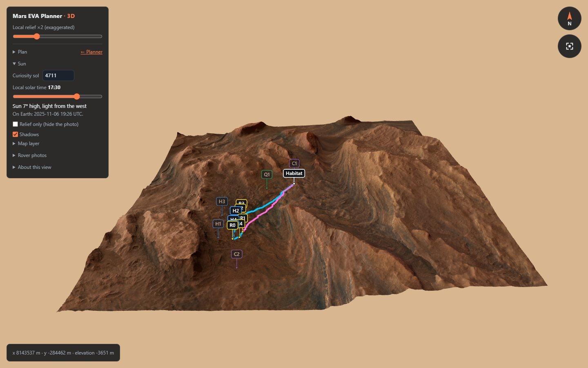
- 1Curiosity sol
The Mars day (default 4711).
- 2Local solar time
Drag to move the Sun through the sol. Here 17:30.
- 3Where the light comes from
"Sun 7° high, light from the west", with the date on Earth. The tooltip gives the exact height, bearing and season.
- 4Note
Says when the Sun was set to the best time to leave.
- 5Relief only
Hides the photo: the relief alone, lit by this Sun.
- 6Shadows
Cast shadows of the relief. True to scale only at relief ×1.
Map layer
One layer of the 2D planner draped on the terrain, with the 2D's colours and legend: Radio coverage, Slope, Too steep to cross, Sand detected, Walking cost or Boulders. Off by default.
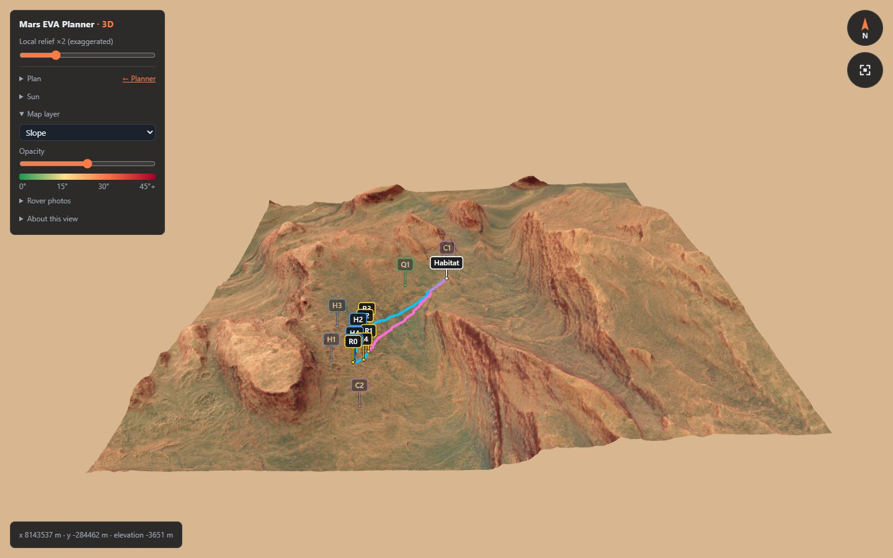
- 1Layer
Pick one; Off removes it. Radio is seen from the plan's habitat; the steep cells use the plan's own slope limit.
- 2Opacity
How much of the photo shows through.
- 3Legend
The same scale as in the 2D (slope: 0°, 15°, 30°, 45° and more).
The layer stays on while rehearsing and with Relief only. A layer the server cannot give says "Unavailable: …".
Rehearse the walk
Rehearse walks the plan at eye height, on the EVA's own clock, with the same guide and meters as the arm tablet. The panel hides so the scene shows; the relief locks at ×1 and the Sun follows the EVA clock.
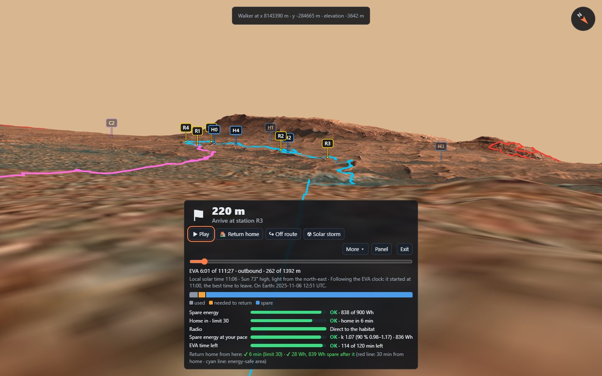
- 1Next maneuver
As the tablet shows it: the arrow, the distance big ("220 m") and the instruction ("Arrive at station R3"). With voice on, it is spoken.
- 2Play / Pause
Or Space when no control has focus.
- 3Return home
Abort: the fastest way home from here, drawn red.
- 4Off route
Demo: the walker leaves the route by 25 m, then the guide brings it back.
- 5Solar storm
Demo: the storm alert and the automatic way home, with the dose.
- 6More
Chase view, recentre, speed, voice and the energy-use demo.
- 7Panel
Shows or hides the side panel without leaving.
- 8Exit
Leaves the rehearsal. Esc only closes a card and pauses.
- 9Scrubber
Drag to jump to any moment of the walk.
- 10EVA clock
"EVA 6:01 of 111:27 · outbound · 262 of 1392 m".
- 11Sun line
Local solar time and the Sun's height at this moment of the EVA, and the time it started (11:00, the best time to leave).
- 12Energy bar
Used, needed to return and spare, as in the 2D planner.
- 13The tablet's meters
Spare energy, Home in · limit 30, Radio, Spare energy at your pace, EVA time left. Each with its state word, OK LOW TURN BACK, and a bar in that colour.
- 14Return home from here
On pause: time and energy to walk home from this point. Red line on the terrain: 30 min from home; cyan: the area safe with the energy left.
More
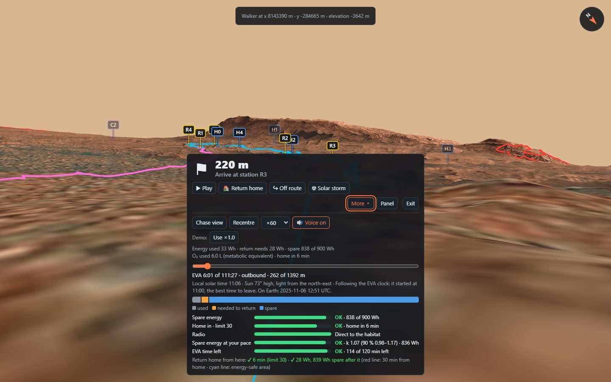
- 1Chase view
The astronaut seen from behind.
- 2Recentre
Looks forward again after you drag to look around (double-click does the same).
- 3Speed
×1, ×30, ×60 or ×180.
- 4Voice
Speaks the maneuvers.
- 5Use ×k
Demo: makes the astronaut use more (or less) energy than the model, 1.0 → 1.2 → 1.5 → 0.8.
- 6Energy numbers
Used, needed to return, spare; oxygen used (metabolic equivalent).
At each station
The walk stops at every station with its card. The clock keeps the station's service time.
- 1Station card
Arrival ("11 min into the EVA"), time standing here, why the station matters and its tasks.
- 2Done, continue
Resumes the walk.
- 3Return home from here
"✓ 10 min (limit 30) · ✓ 53 Wh, 783 Wh spare after it".
- 4The next leg
"50 m · Arrive at station R2".
When the astronaut uses more energy than planned
The tablet learns, as the walk goes, how much energy this astronaut really uses against the model (the factor k), and recomputes the spare energy at that pace. Try it with Use ×1.5 under More.
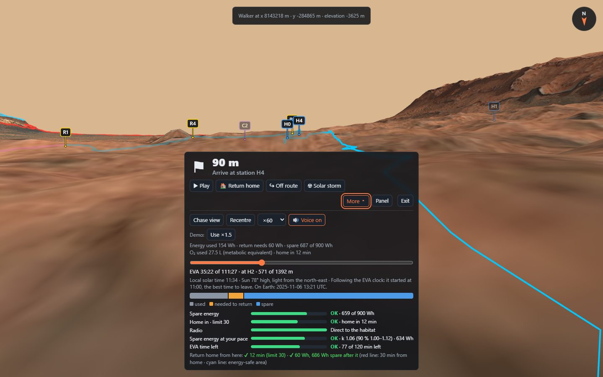
- 1Use ×1.5
The simulated astronaut now uses 50 % more than the model.
- 2Spare energy at your pace
The meter that uses the learned factor.
- 3The learned factor
"k 1.06 (90 % 1.00–1.12) · 634 Wh": the estimate, its 90 % range, and the energy spare at that pace. It moves towards 1.5 as more of the walk is seen.
- 4Energy numbers
What has really been used so far.
Return home, off route and solar storm
Three buttons rehearse what can go wrong. The way home is drawn red and a rejoin orange; it replaces the walked route until Exit, and the EVA clock goes on through it.
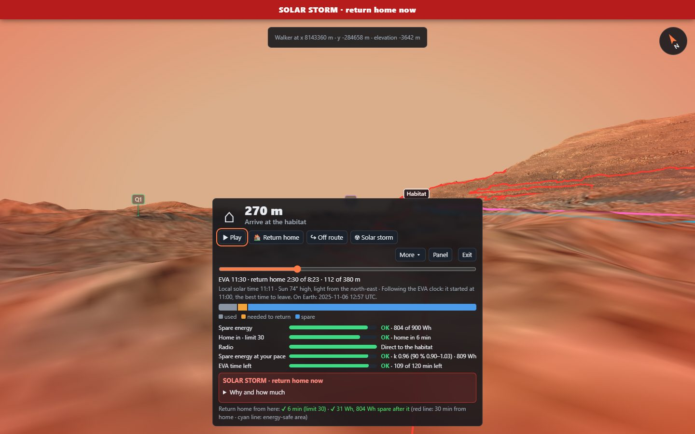
- 1Storm banner
"SOLAR STORM · return home now", the tablet's banner, with a red vignette over the view.
- 2Solar storm
The button that starts the demo.
- 3Heading home
The maneuver now leads to the habitat.
- 4Clock of the way home
"EVA 11:32 · return home 2:30 of 8:23 · 112 of 380 m". Why and how much gives the dose.
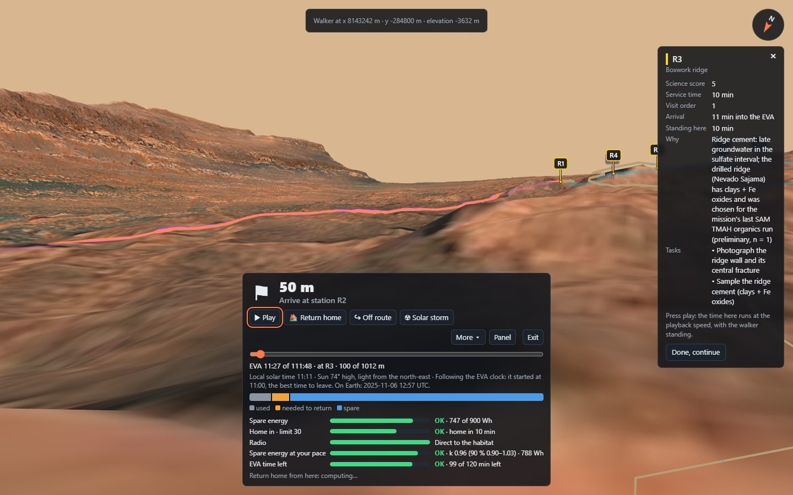
- 1Off route
The walker steps 25 m off the route.
- 2Back to the route
"Bear left": the guide brings the walker back.
- 3New end of the EVA
The clock counts the rejoin; the orange line shows it.
Back at the habitat
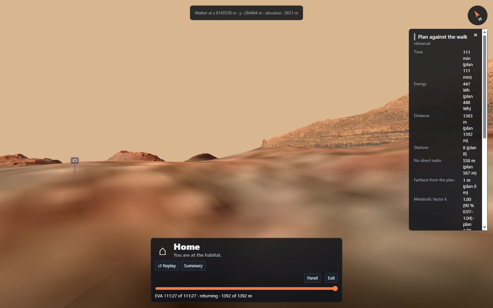
- 1Plan against the walk
What the rehearsal did next to what the plan said: time 111 min (plan 111), energy 447 Wh (448), distance 1363 m (1392), stations 8 (8), metres without direct radio, how far it strayed, and the learned factor k.
- 2Summary
Shows the card again after you close it.
- 3Replay
From the start, as a new walk with its own summary (also at the bottom of the card, and Space).
- 4Exit
Back to the free view.
Walk freely
Walk anywhere in the box in first person. It starts next to the habitat, facing the way the route leaves. The route becomes a path on the ground in the colours of its legs, and each station a ring with a flag.
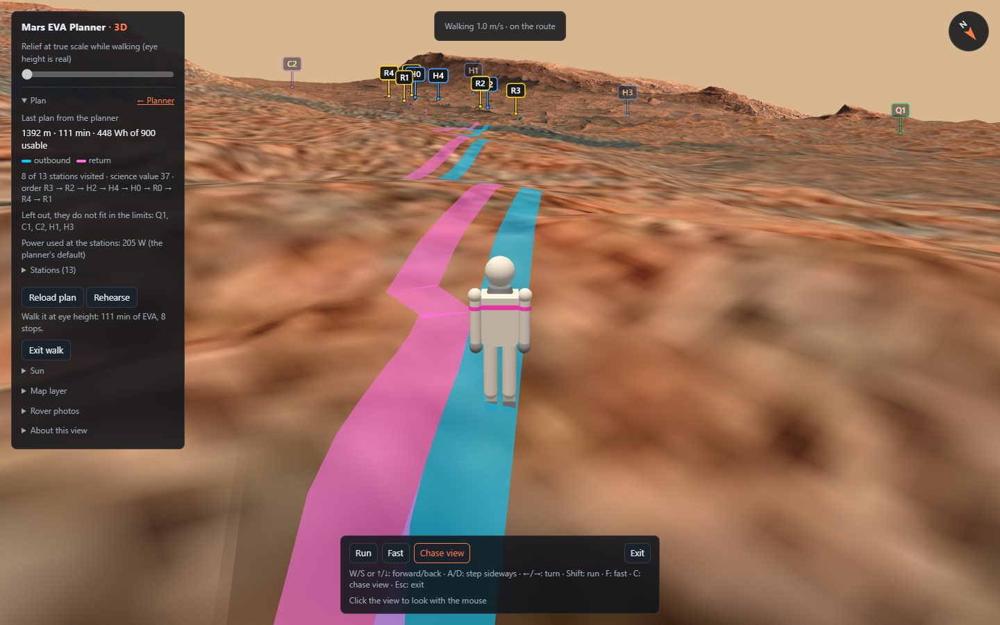
- 1Walk bar
The buttons and the keys.
- 2Run
3 m/s, or hold Shift.
- 3Fast
Fast travel at 20 m/s, or F.
- 4Chase view
The astronaut seen from behind, or C.
- 5Exit
Or Esc (the first Esc frees a captured mouse).
- 6Keys
W/S or ↑/↓ forward and back, A/D sideways, ←/→ turn.
- 7Speed and route
"Walking 1.0 m/s · on the route", or how far the route is.
| Keyboard and mouse | Touch screen | |
|---|---|---|
| Walk forward / back | W S or ↑ ↓ | up/down arrow pad (hold) |
| Step sideways | A D | left/right arrow pad (hold) |
| Turn | ← →, 90° per second, also while walking | drag |
| Look | click the view, then move the mouse | drag |
| Run · fast travel · chase view | Shift · F · C | Run · Fast · Chase view |
Rover photos
Curiosity's Navcam photos placed where the camera stood. Show photo stops in the Rover photos section puts orange camera pins on the terrain (they are off at the start, and hidden while rehearsing). A pin opens the stop's card: the photo, one button per view, date, sol, local time, direction and credit.
View from here puts the camera where the Navcam was, at relief ×1 with the Sun of the photo's sol and time, and lays the photo over the view: the slider fades it, Previous and Next change view, Realign flies back after a drag, and Exit (or Esc) puts camera, relief and Sun back. A station's card shows the nearest photo within 150 m, with View the rover photo.
data/tiles/3d/photos/). Without it the section says "No rover photos: the server has no photo catalogue" and the rest of the map works.Share a view
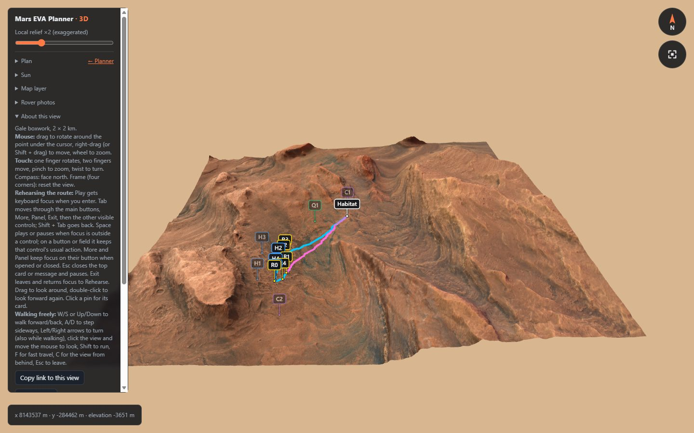
- 1Copy link to this view
An address that opens the same camera, relief, sol, time and shadows. On another machine of the network the link is shown to copy by hand.
- 2Save image
The terrain, route and pins as a PNG, without the panels.
At the bottom of the section, Quality says the preset in use ("Quality: high · mesh every 2 m"). Add ?q=low on slow machines (4 m mesh); touch and small screens start low.
Address options
| Add | What it does |
|---|---|
?q=low · ?q=high | Quality preset |
?k=3 | Relief exaggeration at the start, 1 to 5 |
?sol=4711<=15:00 | The sol and local solar time of the Sun |
?shadows=0 | Start without cast shadows |
?drag=pan | Map-style mouse: drag moves, right-drag rotates |
?photo=<id> | Open a rover photo in the photo view |
?plan=default | Plan with the default settings on load. Replaces the saved plan. |
Keyboard
| Keys | Where | What happens |
|---|---|---|
| Tab, Enter or Space | Panel | Open a section or a list; choose a station or a photo stop |
| Space | Rehearsal, focus outside a control | Play or pause (on a button or a field it keeps that control's own action) |
| Tab · Shift+Tab | Rehearsal | Main buttons, More, Panel, Exit, then the other controls |
| Esc | Rehearsal | Close the card or message on top and pause; it never leaves |
| WASD, arrows, Shift, F, C, Esc | Walk freely | Walk, turn, run, fast travel, chase view, leave |
| Esc | Photo view | Leave the photo view |
On touch screens every control is at least 44 px; pinch a panel to zoom the page, pinch the view to zoom the 3D.
Learning routes
Start with a plan from the 2D planner (for example 120 min and 1,000 Wh with the 13 saved stations).
Read the ground
- Move the relief slider to ×4 and turn the view.
- Map layer: Slope, then Too steep to cross.
You see: the knolls and scarps the route goes around.
Rehearse the plan
- Rehearse, then Play at ×60.
- At R3 read the card, then Done, continue.
- Pause anywhere and read Return home from here.
You see: the red 30 min line and the cyan safe area around the walker.
Light at departure
- Sun: drag the time from 07:00 to 17:30 with Shadows on.
- Return to the best time to leave.
You see: which slopes are in shade at each hour.
Something goes wrong
- Rehearse; after a few minutes press Solar storm.
- Replay and try Off route, then Return home.
You see: the red way home and the orange rejoin, and the EVA clock that goes on.
A tired astronaut
- Rehearse; More → Use ×1.5.
- Play and watch Spare energy at your pace.
You see: k moving from 1 towards 1.5 and the spare energy falling.
Walk the ridges
- Walk freely, press C for the chase view.
- Follow the path to R3, then F to travel fast.
You see: the scale of the terrain from the astronaut's eyes.
What it shows, and what it does not
| On screen | It is | It is not |
|---|---|---|
| Relief | The 1 m terrain model: hillside, knolls and scarps | The 1–2 m boxwork ridges: those are in the photo only. Above ×1 it is exaggerated |
| Shadows | Shadows of the relief as drawn, from the Sun of Mars (Mars24) | True at relief above ×1; light levels are a look, with no dust or atmosphere |
| The rehearsal | The plan played back on its own clock, with the tablet's logic | A new plan: it never changes the route |
| Meters | The arm tablet's: energy, time home, radio, energy at your pace, EVA time | Measurements: the energy is a model and k is simulated by Use ×k |
| Walk freely | A way to see the terrain at eye height | The EVA: no slope limit or energy cost |
| Rover photos | Where the Navcam stood and where it looked | A promise that a station is in view: terrain may hide it |
When something looks wrong
| You see | Why | What to do |
|---|---|---|
| A message with a command instead of the terrain | The 3D terrain has not been built | python src/viz3d/build_terrain_assets.py |
| Terrain but no route | No plan saved yet | Plan in the 2D planner, then Reload plan |
| An old route | The page read the plan when it opened | Reload plan |
| "No rover photos: the server has no photo catalogue" | The photo catalogue is not on this machine | The rest works; see web/3d/README.md |
| Slow or choppy | High quality on a slow machine | Add ?q=low |
| Copy link does nothing | The clipboard works only on localhost or https | Copy the link from the box under the button |
| Esc does not leave the rehearsal | By design: Esc only pauses, so the end summary is not lost | Press Exit |